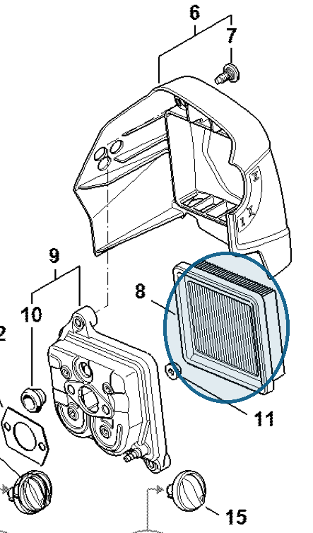

Air filter
4180 141 0300
HT 135 — air filter
Air-filter element between the filter cover (item 6) and filter housing (item 9).
Item 8 Qty listed: 1

HT 135-Z spare-parts list, 10/28/2024. Drawing p. 20; parts table p. 21.
4180 141 0300
Air-filter element between the filter cover (item 6) and filter housing (item 9).
Item 8 Qty listed: 1

HT 135-Z spare-parts list, 10/28/2024. Drawing p. 20; parts table p. 21.